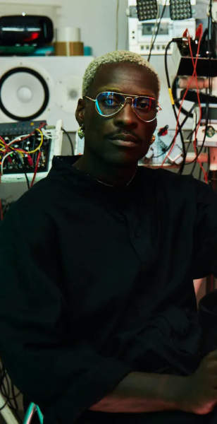

Watch and interact with your favorite musicians Live from their studio.
A UNIQUE WAY TO EXPERIENCE YOUR FAVORITE ARTISTS
Echio creates a live window into how your favorite artists work, how they think, how they approach creative problems and overcome technical ones.
Experience
Exchange
AN INTERACTIVE AND MEANINGFUL CONNECTION
There’s no substitute for live exchange. With Echio, we offer a deeper level of interaction between artists and fans. Fans ask their favorite artists questions, access exclusive shared files. Artists can involve their biggest fans into their creative process or get instant feedback on their work in progress.
SUPPORT ARTISTS, NOT BIG TECH
Unlike other platforms, 85% of what you pay goes directly to the artists whose work you love. Founded by artists themselves, Echio is committed to fair and transparent business practices.
Suppport
What artists did on Echio
-
Workshops
DJ Tennis & Joseph Ashworth gave us tips on how to find the core elements of a track.
-
Listening sessions
Marina Trench dug through the records of a vinyl collector whose identity was kept secret.
-

desc_wrapper
Masterclasses
NSDOS did a masterclass on his Creative Coding approach of music composition.
Highlights
| Chassol | CREATING A TRACK FROM A TO B | 1 Dec 2022 - 08:00PM |
|---|---|---|
| Low Jack | Baiser Mortel avec Low Jack, Le Diouck | 23 Nov 2022 - 07:00PM |
| MKL | INSIDE TEXTURES (2 HOURS) | 16 Oct 2022 - 01:00PM |
| Biesmans | Track breakdown: "Vanishing Flowers" | 13 Oct 2022 - 05:00PM |
| Frank Wiedemann | Track Breakdown: "REJ" | 27 Sep 2022 - 06:00PM |
| Fat Tony | In-Studio w/ Steel Tipped Dove | 17 Sep 2022 - 09:00PM |
| JB Dunckel | Track Breakdown: "Spark" | 13 Sep 2022 - 05:00PM |
| Luke Slater | Limitations in creation - Nuits Sonores workshop | 25 May 2022 - 11:23AM |
| Para One | Scoring films | 8 May 2022 - 04:46PM |
| Paloma Colombe | Paloma Colombe invites Anna Olekhnovych | 11 Apr 2022 - 04:53PM |
| Marina Trench | Remote Digging - Marina Trench Take Over | 31 Mar 2022 - 05:21PM |
| DJ TENNIS | DJ Tennis & Joseph Ashworth - Arrangement & Production workshop | 28 Jan 2022 - 06:07PM |
| NSDOS | Creative Coding & Music by NSDOS | 26 Jan 2022 - 04:10PM |
| Lauer | Track Breakdown: Sueno Hebreo (Lauer Remix) | 20 Jan 2022 - 06:28PM |